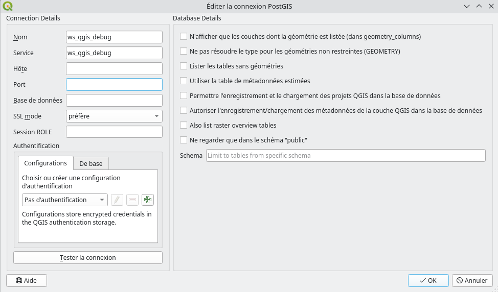
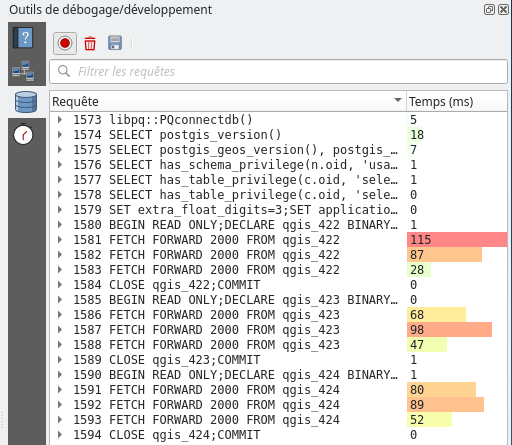
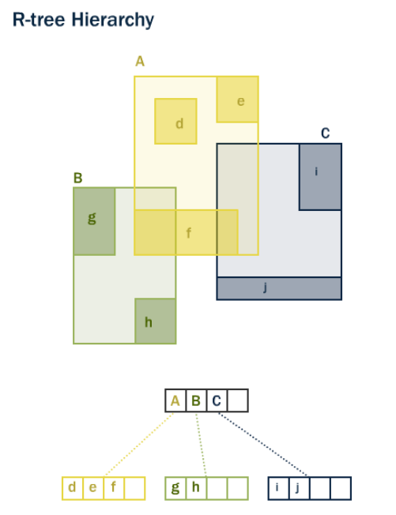
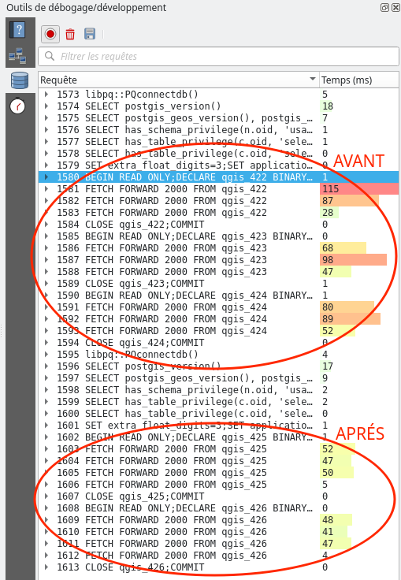
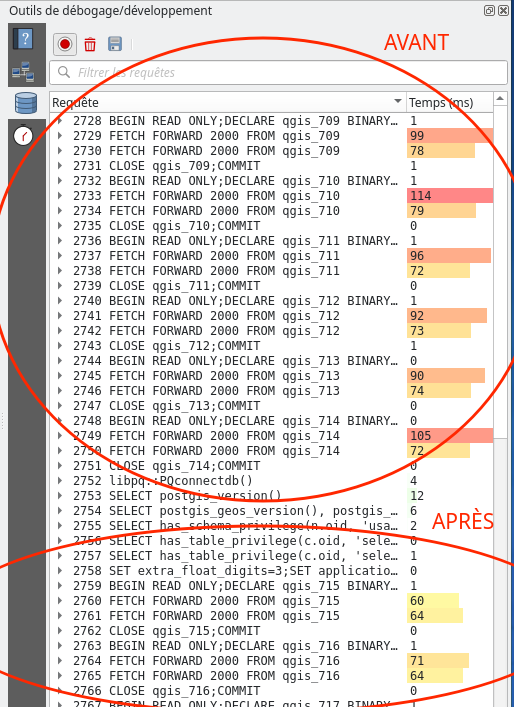
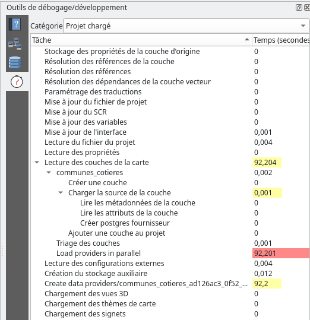
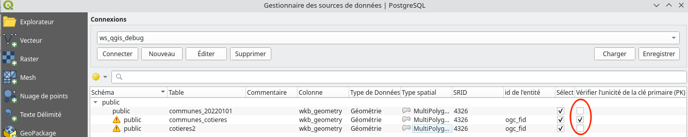
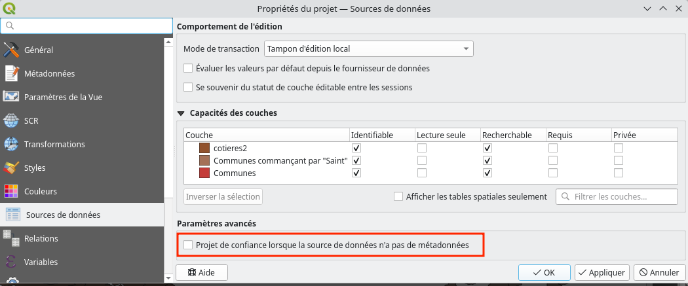
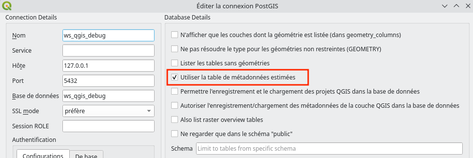
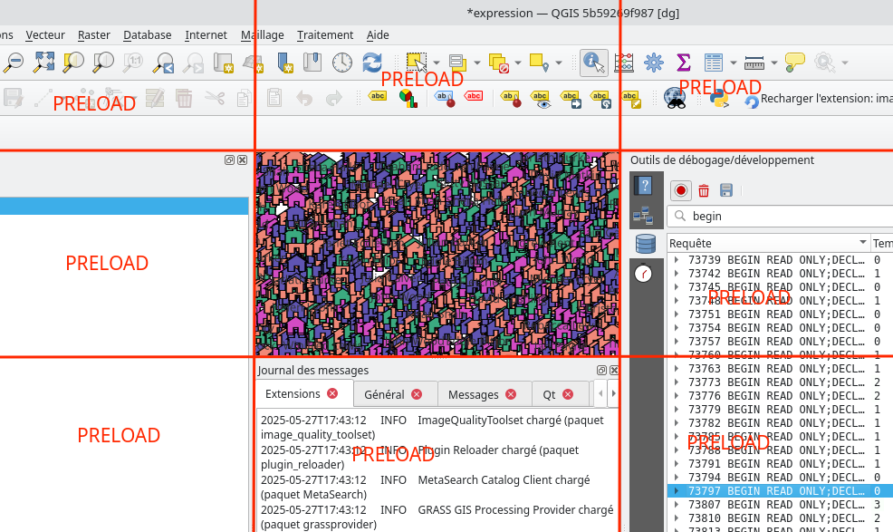

<style> img { margin:0 !important; vertical-align:top !important; } table td { border-bottom: 0 !important; padding-left: 0 !important; vertical-align:top !important; } </style> ## Comprendre et optimiser les performances de son projet QGIS Rencontres des Utilisateurs Francophones de QGIS<br/> Avignon - 10/06/2025 </td><td><img src="banniere.png" box-shadow="none"></img></td> Julien Cabieces / Jacky Volpes <img src="oslandia_logo_164x164.png" height="150" /> --- ### Qui sommes nous ? <table vertical-align="middle"> <tr> </td> <td><img text-align="center" src="juc_rond.png" height="250" /></td> <td> Julien Cabieces<br/> Developpeur C++/Python<br/> QGIS Core committer<br/> <img text-align="center" src="github_logo.svg" height="32" width="32"/><em>@troopa81</em><br/> <em>@CabiecesJ@mapstodon.space</em> </tr> </table> <table vertical-align="middle"> <tr> <td> Jacky Volpes<br/> Developpeur C++/Python<br/> Contributeur coeur QGIS & Plugins<br/> <img text-align="center" src="github_logo.svg" height="32" width="32"/><em>@Djedouas</em><br/> <em>@djedouas@mamot.fr</em> </ul> </td> <td></td> </tr> </table> --- ## Plan de l'atelier Débugger des projets --- ## Prérequis (1/2) - Télécharger le [dump SQL](https://share.oslandia.net/s/FZAL5yCaBrYDbmF) pour la base de données ```shell $ createdb ws_qgis_debug $ pg_dump -d ws_qgis_debug -f ws_qgis_debug.sql ``` - Configurer votre fichier [.pg_service.conf](https://docs.qgis.org/3.40/fr/docs/user_manual/managing_data_source/opening_data.html#postgresql-service-connection-file) avec le nom *[ws_qgis_debug]* **Puis ...** (flèche de droit pour la slide suivante) --- ## Prérequis (2/2) - [Ajouter](https://docs.qgis.org/3.40/fr/docs/user_manual/managing_data_source/opening_data.html#connecting-to-postgresql) la base de données dans QGIS  - Ouvrir le projet [communes](communes/communes.qgz) --- ## Origine des données - Communes téléchargées [ici](https://www.data.gouv.fr/fr/datasets/decoupage-administratif-communal-francais-issu-d-openstreetmap/) - 🇫🇮 [GISPO](https://www.gispo.fi/en/) [performance test](https://github.com/GispoCoding/qgis-postgis-performance-test) --- ## Préparation des données #### C'est déjà fait Communes ```shell $ createdb ws_qgis_debug $ psql -d ws_qgis_debug -c 'create extension postgis;' CREATE EXTENSION $ ogr2ogr -f "PostgreSQL" PG:"host=127.0.0.1 user=julien dbname=ws_qgis_debug" \ /home/julien/Téléchargements/communes-20220101-shp/communes-20220101.shp \ -nlt MULTIPOLYGON ``` Communes cotières ```sql create view communes_cotieres as select * from communes_20220101 c where not st_isempty(st_difference(st_boundary(c.wkb_geometry), (select st_collect(ic.wkb_geometry) from communes_20220101 ic where ic.wkb_geometry && c.wkb_geometry AND ic.ogc_fid != c.ogc_fid ))); ``` Pour la thématique sur les [expressions](https://github.com/GispoCoding/qgis-postgis-performance-test?tab=readme-ov-file#to-reproduce-the-issue) --- ## Communes --- ### Communes: Identifier la requête - Ouvrir le projet [communes](communes/communes.qgz) - Zoomer sur une région (exemple: Occitanie) - Clic droit barre d'outils - ➡️ *Panneaux* ➡️ *Outils de debogage et développement* - Onglet *Enregistreur de requêtes* - Effacer le journal <img style="vertical-align:middle !important" src="mActionDeleteSelected.svg" /> - Activer l'enregistrement - Se déplacer ! --- ### Communes: Identifier la requête  --- ### Communes: Requêtes en 2 étapes Déclaration du curseur ```sql BEGIN READ ONLY;DECLARE qgis_422 BINARY CURSOR FOR SELECT ... ``` Récupération des données ```sql FETCH FORWARD 2000 FROM qgis_422 ``` Seule la 2ème a une latence, mais nous sommes intéressés par la 1ère 🤔 --- ### Communes: Débugger la requête - Clic droit sur la déclaration du curseur ➡️ Copier le SQL - Ouvrir une console **psql** - Remplacer - **BEGIN READ ONLY;DECLARE qgis_422 BINARY CURSOR FOR** - par - **EXPLAIN ANALYZE** - Exécuter ```sql EXPLAIN ANALYZE SELECT st_asbinary("wkb_geometry",'NDR'),"ogc_fid" FROM "public"."communes_20220101" WHERE "wkb_geometry" && st_makeenvelope(0.62040804636523017,44.39446078289464026,4.48068239699022097,47.16706034793472213,4326) ``` --- ### Communes: EXPLAIN ``` QUERY PLAN -------------------------------------------------------------------------------------------------------------------------------------------------------------------------------------------------------------------------------------------- Seq Scan on communes_20220101 (cost=0.00..17929.06 rows=5281 width=36) Filter: (wkb_geometry && '0103000020E610000001000000050000004830C479D959E0BFCB41498B36B145404830C479D959E0BFEBA12D161B144740EE205B2661CB0A40EBA12D161B144740EE205B2661CB0A40CB41498B36B145404830C479D959E0BFCB41498B36B14540'::geometry) (2 lignes) ``` ??? Qu'est-ce qui cloche 🔔 ??? --- ### [Solution] Communes: Seq Scan - Scan séquentiel: A chaque requête - Postgres lit Toute la table - filtre les géométries 1 par 1 😱 ➡️ Il manque un index --- ### Aparté: les index - Index spatiaux ➡️ extension du principe d'index - Différents types: b-tree, **GiST**, SP-GiST, BRIN - GiST: Arbre de Bounding BOX pour un accés rapide  --- ### Communes: On ajoute un index ```sql CREATE INDEX communes_gist_idx ON communes_20220101 USING GIST ( wkb_geometry ); ``` on relance le EXPLAIN ``` QUERY PLAN ------------------------------------------------------------------------------------------------------------------------------------------------------------------------------------------------------------------------------------------------------ Bitmap Heap Scan on communes_20220101 (cost=153.21..12007.29 rows=5281 width=36) Recheck Cond: (wkb_geometry && '0103000020E610000001000000050000004830C479D959E0BFCB41498B36B145404830C479D959E0BFEBA12D161B144740EE205B2661CB0A40EBA12D161B144740EE205B2661CB0A40CB41498B36B145404830C479D959E0BFCB41498B36B14540'::geometry) -> Bitmap Index Scan on communes_gist_idx (cost=0.00..151.89 rows=5281 width=0) Index Cond: (wkb_geometry && '0103000020E610000001000000050000004830C479D959E0BFCB41498B36B145404830C479D959E0BFEBA12D161B144740EE205B2661CB0A40EBA12D161B144740EE205B2661CB0A40CB41498B36B145404830C479D959E0BFCB41498B36B14540'::geometry) (4 lignes) ``` --- ### Communes: Avant / Aprés  ⚠️ La récupération de la donnée (géométrie notamment) prends aussi du temps --- ### Communes: BONUS Dézoomer au niveau de la france et analysez la requête Expliquez ce que vous voyez --- ### [Solution] Communes: BONUS ```sql QUERY PLAN -------------------------------------------------------------------------------------------------------------------------------------------------------------------------------------------------------------------------------------------- Seq Scan on communes_20220101 (cost=0.00..21621.31 rows=34819 width=36) (actual time=0.057..145.882 rows=34707 loops=1) Filter: (wkb_geometry && '0103000020E61000000100000005000000FC291879E9501AC0E9219FB290154540FC291879E9501AC0E945E62D35D749406098A9CEA8312740E945E62D35D749406098A9CEA8312740E9219FB290154540FC291879E9501AC0E9219FB290154540'::geometry) Rows Removed by Filter: 248 Planning Time: 0.383 ms Execution Time: 146.743 ms (5 lignes) ``` - On retombe sur un scan séquentiel - On veut toutes les communes, l'index est inutile --- ## Communes commençant par "Saint" 🙏 --- ### Communes "Saint" - Ouvrir le projet [communes_saints](communes_saints/communes_saints.qgz) - Appliquer la méthode décrite précédemment pour optimiser --- ### [Solution] Communes "Saint" Créer un index sur le nom ```sql create index communes_nom_idx on communes_20220101 (nom text_pattern_ops); ``` - Ne fonctionne pas si on veut les communes qui **contiennent** "Saint". - On peut alors utiliser **pg_trgm** ```sql CREATE EXTENSION pg_trgm; create index communes_nom_pg_trm_idx on communes_20220101 using gist (nom gist_trgm_ops); ``` --- ### Communes "Saint": Avant/Aprés  --- ## Les communes cotières --- ### Les communes cotières - Depuis *Outils de debogage et développement* - onglet *Profileur* - Catégorie "Projet chargé" - si absent, masquer/afficher l'outil de deboggage 🐞 - Ouvrir le projet [cotieres](cotieres/cotieres.qgz) - Qu'observez vous? - Comment améliorer ? --- ### [Solution] Cotières: Identification du problème - Grosse latence dés le chargement (1 minute 30) - Application bloquée  --- ### [Solution] Cotières: Identification du problème ```sql SELECT count(distinct ("ogc_fid"))=count(("ogc_fid")) FROM "public"."communes_cotieres" ``` - QGIS essai de savoir s'il y a une clé unique ! --- ### [Solution] Cotières: Paramètres du chargement de couche Ne pas vérifier l'unicité des clés  --- ### [Solution] Cotières: Paramètres du chargement de couche Projet de confiance pour les sources de données  ⚠️ Ne fonctionne que lors d'un chargement d'un projet, pas lors de l'ajout de couche 🐞 --- ### [Solution] Cotières: Paramètres du chargement de couche Utiliser la table des méta-données estimées  ⚠️ Ne fonctionne pas dans ce cas là 🐞 --- ### Cotières: Chargement des couches 🚧 Améliorations à prévoir 🚧 - Grouper les requêtes de méta-données pour toutes les couches - Meilleur configurabilité des optimisations - pour un projet/par couche/par connexion - par optimisation (champs unique, type de géométrie, extent...) 💸 On cherche des financeurs 💸 --- ### [Solution] Cotières: Et sinon ça rame toujours... 🚣🏻 ```sql CREATE MATERIALIZED VIEW cotieres_mat AS select * from communes_cotieres; ``` --- ## Expression Merci GISPO 🇫🇮 pour les données! --- ### Expression - Ouvrir le [projet](expression/expression.qgz) - Optimisez --- ### [Solution] Expression : Première requête ```sql EXPLAIN ANALYZE SELECT "id_contact"::text,"id_building"::text FROM "qgisdbtest"."building_owners" WHERE ("id_building" = 44116); QUERY PLAN -------------------------------------------------------------------------------------------------------------- Seq Scan on building_owners (cost=0.00..3740.47 rows=1 width=64) (actual time=5.069..22.486 rows=2 loops=1) Filter: (id_building = 44116) Rows Removed by Filter: 220995 Planning Time: 0.586 ms Execution Time: 22.542 ms (5 lignes) ``` Pas de **Index Scan**. Pourtant ```sql \d qgisdbtest.building_owners ... Index : "building_owners_pk" PRIMARY KEY, btree (id_contact, id_building) ``` Index sur le couple *id_contact*, *id_building*, mais pas sur *id_building* seul. --- ### [Solution] Expression Créons l'index ```sql create index bo_id_idx on gisdbtest.building_owners ( id_building ) ``` ```sql EXPLAIN ANALYZE SELECT "id_contact"::text,"id_building"::text FROM "qgisdbtest"."building_owners" WHERE ("id_building" = 44116); QUERY PLAN ---------------------------------------------------------------------------------------------------------------------------- Index Scan using bo_id_idx on building_owners (cost=0.42..8.45 rows=1 width=64) (actual time=0.043..0.047 rows=2 loops=1) Index Cond: (id_building = 44116) Planning Time: 0.300 ms Execution Time: 0.067 ms (4 lignes) ``` Mieux, mais ça rame encore ... --- ### [Solution] Expression : Deuxième requête ```sql EXPLAIN ANALYZE FOR SELECT "id","name"::text FROM "qgisdbtest"."contact" WHERE "id"=10; ``` - Seq scan au lieu de index scan - Trop peu de valeurs - Index scan nécessite une lecture préalable dans l'index - PostGresql préfère lire une table en Seq scan - A valider en ajouter des données OK, mais ça rame toujours ... --- ### [Solution] Expression - Mais qu'est-ce qui ralentit le rendu ? - 2 Méthodes - On analyze la requête - "Qui a besoin de récupérer le lien entre building et le champs nom du contact - Méthode vieille comme la nuit des temps 🦕 - On désactive 1 par 1 les couches/symbologie - On isole le coupable 🕵️ --- ### [Solution] Expression 🚓 Le coupable est: l'expression des étiquettes du building ``` relation_aggregate( 'building_owners_eb7ff7ce_9fb2_49f1_af7c_7f662f03acd4_id_building_building_ffbf4145_36d9_4e70_9aec_b35452629b36_id', 'concatenate', attribute( get_feature_by_id( 'contact_0e70b878_8eb7_44e6_af1d_dcc568a6e95f', id_contact), 'name'), ',') ```` - Pour chaque building, QGIS lance 2 requêtes pour: - Récupérer l'*id_contact* du *building* - Récupérer le nom du contact depuis l'*id_contact* - ✅ Requêtes sont courtes... - ❌ Mais trop nombreuses! --- ### [Solution] Expression Créer une view 👁️ ```sql CREATE VIEW qgisdbtest.building_with_owners AS SELECT b.*, STRING_AGG(c.name, ', ') AS owners FROM qgisdbtest.building b JOIN qgisdbtest.building_owners AS bo ON b.id = bo.id_building JOIN qgisdbtest.contact AS c ON bo.id_contact = c.id GROUP BY b.id; ``` - Ajouter la nouvelle vue - Copier/Coller le style - Éditer le champs des étiquettes Le rendu est maintenant rapide 🪄 --- ### Expression: BONUS Pourquoi la "même" requête est exécutée plusieurs fois ? --- ### [Solution] Expression: BONUS - QGIS précharge les tuiles autour de la zone de rendu - Utiles pour les tuiles XYZ, WMS... - Mais re-requête tout le temps les données de base - Au cas où elle est changéé - Soit 9 zones en tout ➡️ 9 requêtes  --- ## COG: Cloud Optimized Geotiff --- ### COG: Accés distant raster C'est [impossible](https://github.com/qgis/QGIS/issues/53351) pour l'instant 😭 - Attention à la précision des données - Exemple: Sentinel en UInt16 pour afficher en RGB (8 bits) Récupère 2 x trop de données --- ## Tuiles XYZ, WMS --- ### OpenStreetMap 🗺️ - Depuis l'explorateur, noeud *Tuiles XYZ*, ajouter OpenStreetmap - Depuis *Outils de debogage et développement* - onglet *Journal de bord du réseau* - Se déplacer Il manque le temps des requêtes 😢 --- ## Questions Rencontres des Utilisateurs Francophones de QGIS<br/> Avignon - 10/06/2025 </td><td><img src="banniere.png" box-shadow="none"></img></td> Julien Cabieces / Jacky Volpes <img height=150px src="oslandia_logo_164x164.png">